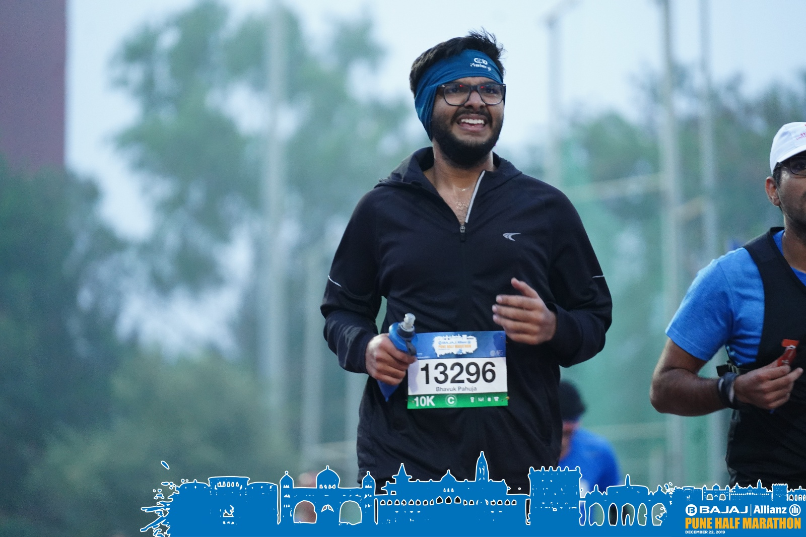
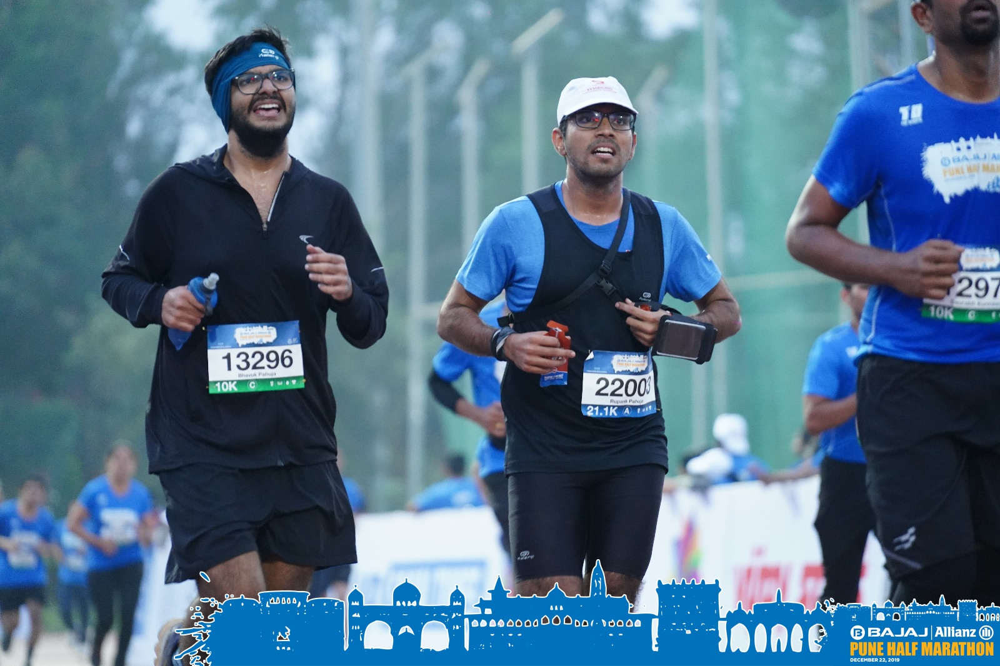

22 December 2019, my first 10 K race. I was quite excited for the race from the day my brother registered for it. Me and my brother woke up at 3:30 in the morning on 22nd and were up and ready by 4:15 to leave for Shree Shivchhatrapati Sports Complex, Pune where the race was supposed to start.
I was feeling nice and was quite motivated to complete the race in under 60 mins, as I was suffering from piriformis syndrome from the past 3–4 weeks and at last now I was able to recover from the pain and that too on my own. We reached the sports complex at 5:10, yeah it was a long ride. The flag-of time for the race was at 6:00, so we did some warm-up, streches and were ready to run. My brother actually registered for the half marathon but since he was suffering from some knee pain from past 3 weeks he decided to not to run the 21k distance rather he decided to pace me for my race.

We were all set standing on starting line all warmed up and ready to run. We decided to run the first 7 kms at a pace of 6:20 and then pace up for the last three kms. It was very congested for first 1–1.5 kms as there were around 7–8 thousand runners taking part in the 10K race. We were running good and were able to maintain our pace(6:20) for first 7 kms and it was time to pace up but I wasn’t ready for that so I said my brother “I wouldn’t be able to pace up right now let’s pace up at 8kms”. So I ran 8th kilometre at a pace of 5:40, and at this moment to achieve my goal I was required to run the last two kilometres at a pace of 5mins per kilometre, and it was really tough for me as my quads per paining a lot and wasn’t able to take deep breaths and thus I wasn’t able to achieve my goal, my chip time was 1:04:58, though it was my 10K personal best.
My brother helped me a lot to achieve this time all thanks to him as I was just running behind him without thinking of anything else. Thank you bro for everything. I was satisfied with my performance but I learnt that I have to train a lot harder to achieve my goals.
We(me and my brother) have a long road to travel and we will not stop until we achieve our goals and dreams.